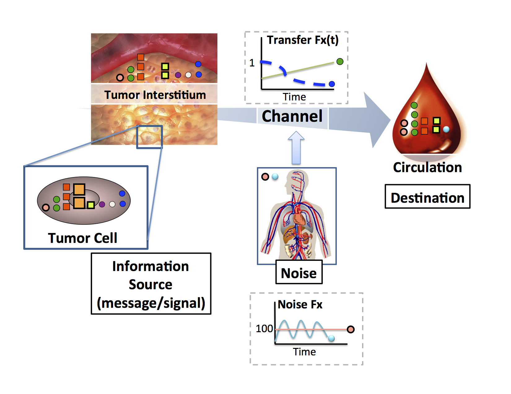

The Mallick lab works to detect disease earlier, predict how it will behave, and thereby improve patient outcomes. We approach these problems through a multi-scale lens, integrating experimental and computational work across molecular, cellular, tissue, and organism scales, because we believe that overcoming the challenges of conventional biomarker discovery and precision medicine requires studying biology across multiple regulatory scales. This perspective shapes everything we do, from bench experiments to how we design AI systems. Our group develops "meaningful AI," interpretable, physics-informed machine learning that embeds biological knowledge directly into model architecture, alongside the multi-scale experimental and computational approaches needed to generate and make sense of data across these scales.
Our work spans five areas: Tumor Ecology, Evolution and Spatial Biology; Multi-scale Approaches to Rational Biomarker Discovery; Systems Biology: Network Biology and Multi-omic Regulation; Next Generation Meaningful AI; and Foundational Methods and Technology Development. The first four reflect our patient-centered research mission, grounded in specific diseases like lung cancer, prostate cancer, tauopathies including Alzheimer's disease and Parkinson's, and multiple sclerosis, though the methods we develop are designed to be general. The fifth reflects a commitment to building open tools and infrastructure, like ProteoWizard and DISK, that serve the broader research community.
Tumor Ecology, Evolution and Spatial Biology
Why do two tumors that look alike behave so differently?
Tumors and tissues behave like ecosystems. We study how cells, their neighbors, and their local environments interact to drive disease progression and drug resistance.
The cells in our bodies don't act alone. They live in communities, and their behavior depends on their neighbors, their physical surroundings, and the chemical signals passing between them, much like organisms in a natural ecosystem. Along a river, different species thrive in different niches depending on the depth of the water, the speed of the current, and the distance from the bank. Change the conditions and you change which species flourish. Tissues work the same way. In a tumor, different regions have different access to oxygen and nutrients, and the cells in harsh, resource-poor niches develop survival strategies that can coincidentally make them resistant to cancer drugs, sometimes before treatment even begins. In the brain, neurons depend on intricate spatial relationships with supporting cell types, and disruption of those relationships is central to diseases like multiple sclerosis and Alzheimer's.
Our group studies how these cellular communities are organized, how they are influenced by their local environments, how they communicate through mechanical, physical, and chemical interactions, and how that organization changes during disease. Understanding tissue behavior requires integrating what's happening within individual cells, between neighboring cells, and across the broader tissue environment. We combine mathematical modeling and AI methods with high-dimensional spatial profiling of tissues, working toward the goal of reading characteristics of cells within a tissue's architecture and predicting how that disease area is likely to progress, whether that means forecasting aggressivity or drug resistance in a tumor or understanding neurodegeneration in the brain.
Our work treats tumors as evolving ecosystems in which microenvironmental pressures, cellular heterogeneity, and selection dynamics interact across scales to shape disease trajectory. Mathematical modeling has been central to this perspective. Our multi-compartment models demonstrated that environmental gradients within tumors, such as oxygen and nutrient availability, can select for drug-resistant phenotypes before any treatment is administered, suggesting that the seeds of therapeutic failure are often present at diagnosis (Mumenthaler et al., Cancer Informatics, 2015). Building on this, we asked how treatment strategies might be designed against a moving evolutionary target, modeling combination regimens intended to suppress resistant subpopulations rather than merely the dominant clone (Mumenthaler et al., Molecular Pharmaceutics, 2011).
The mechanisms of adaptation are varied. In Burkitt's lymphoma, multi-omic longitudinal analysis revealed that resistance arose through epigenetic plasticity rather than genetic mutation, with early histone code alterations enabling PRC2A-mediated methylation heterogeneity (Flinders, Lam et al., Genome Medicine, 2016). In EGFR-mutant NSCLC, quantitative proteomics identified JUN-mediated signaling rewiring as a resistance driver, with expression patterns correlating strongly with poor clinical response (Kani et al., Molecular Cancer Therapeutics, 2017).
A key prediction of this evolutionary framework is that spatial organization should encode information about a tumor's trajectory. We have tested this using high-dimensional spatial protein profiling, including analysis of over 400 non-small cell lung cancer samples with GE Research and multiplexed imaging studies in prostate cancer, finding that the spatial co-organization of the tumor microenvironment predicts clinical outcomes and reveals therapeutic vulnerabilities inaccessible to bulk measurement. To analyze these data we developed geostatistical methods drawn from spatial ecology that model ecological interactions within tissues, providing interpretable spatial features connected directly to underlying biology (Boyce and Mallick, IEEE BIBM, 2019; Jung et al., bioRxiv, 2026).
We are now extending this ecological and spatial perspective beyond oncology, applying similar approaches to study how spatial relationships among neurons and supporting cell types are disrupted in neurodegenerative diseases including tauopathies and multiple sclerosis.

Multi-scale Approaches to Rational Biomarker Discovery
Can a blood test tell us what's happening inside a tumor?
We build models connecting what happens inside a diseased tissue to what's measurable in blood, in both directions, so that a blood draw can reveal whether a tumor is present, how it is behaving, and where it is likely to go.
When cancer is caught early, survival rates improve dramatically. The challenge is finding it early enough. Imagine trying to detect a tumor the size of a grain of rice somewhere inside the human body using only a blood test. That tiny cluster of cells is releasing molecules into the bloodstream, but so is every other tissue in your body. How much signal actually reaches the blood from a tumor that small? What about one the size of a blueberry, or an orange? And does the abundance of a molecule in the blood reliably reflect what's happening inside the tumor, or do some proteins get lost, trapped, or cleared along the way?
These are surprisingly basic questions, and we don't yet have good answers to most of them. There is a missing foundation connecting what's happening inside a tumor to what's measurable in a routine blood draw. Our group works to build that foundation. We develop mathematical models of the entire journey a protein takes from a tumor cell to the bloodstream, accounting for how it's released, how it moves through tissue, and how quickly the body clears it. Some proteins turn out to be naturally easier to detect than others for reasons that have nothing to do with how important they are biologically.
What makes this worth the effort is that a model of that journey can be run in both directions. Understanding how a tumor's biology produces a particular pattern in the blood tells us which molecules are worth measuring in the first place. But the same model, run backward, lets us start from what we measure in a blood sample and reason about the tumor that produced it: whether one is there at all, how large it might be, how it is behaving right now, and where it is likely to go next. A blood draw is one of the few things we can do to a patient repeatedly, cheaply, and safely. We want to get as much out of it as the biology allows.
Despite decades of biomarker research, there remains a limited theoretical foundation connecting tumor biology to peripheral detectability. Most discovery efforts measure what is accessible in blood, identify statistical differences, and validate candidates individually, without a model of why certain molecules reach the circulation and others don't. We set out to build that foundation.
A starting question was deceptively simple: how does the abundance of a protein in a tumor relate to its abundance in the blood? Are there classes of proteins that are inherently more likely to be detectable in circulation, and if so, what properties make them so? To answer this we performed deep proteomic profiling of both tumor tissue and matched blood in xenograft mouse models where human plasma proteins must be tumor-derived. We found that protein stability, cellular localization, and molecular size independently govern the likelihood of circulating detection. Extracellular proteins were roughly seven times more likely to appear in circulation than intracellular proteins after normalizing for abundance, and a threefold decrease in tumor size produced an approximately sixteenfold drop in circulating signal, a nonlinear relationship with significant implications for early detection (Fang, Kani et al., PLoS One, 2011).
These findings raised a further question: can we model the full biophysical journey of a protein from tumor to bloodstream well enough to predict which candidates will be detectable at clinically relevant tumor sizes? We developed generative multi-compartment models of protein shedding from vascularized tumors, explicitly incorporating diffusion, vascular transport, and physiologic clearance (Machiraju, Mallick, Frieboes, Scientific Reports, 2020; Frieboes et al., Cancer Informatics, 2015).
The forward model is a means to an end. Because these are generative, mechanistic models rather than fitted correlations, they can in principle be inverted: given an observed plasma profile, infer the properties of the tumor that generated it. This turns biomarker interpretation into an inference problem, where the quantity of interest is not simply whether a marker is elevated but what configuration of tumor size, vascularization, shedding rate, and clearance is consistent with the observation. It also makes explicit where the inverse problem is ill-posed, since distinct tumor states can produce indistinguishable plasma profiles, which is itself useful for knowing what a blood test can and cannot resolve. We are extending this by connecting the framework to the spatial and ecological perspectives described above, asking how the microenvironmental context of a tumor shapes not only its evolutionary trajectory but also which molecules it sheds into circulation and when.
Systems Biology: Network Biology and Multi-omic Regulation
How does a collection of molecules work together to become a behaving (or misbehaving) cell?
Cell behavior emerges from coordination among thousands of molecules. We integrate data across regulatory layers to map that logic and how it shifts in disease.
Think about how an orchestra works. Dozens of musicians, playing different instruments, each following their own part, somehow produce a single coherent piece of music. No one musician has the whole score in front of them at once, and yet the strings know when to swell as the brass fades, the percussion holds a steady pulse that everyone else moves around. The coordination isn't accidental. It's built into the structure of the music itself, and the music itself, the thing you actually hear, only exists at the level of the whole orchestra. You can't find it by listening to any single instrument in isolation. This is what scientists call emergent behavior: a property of the whole system that isn't apparent, or sometimes doesn't even exist, at the level of any individual part. Cells work the same way. Genes, proteins, and the chemical modifications that regulate them are like different sections of an orchestra, each doing their own part, but the real biology, the behavior of the cell, emerges from how they're coordinated: which genes get turned on together, which proteins get modified in response to which signals, and how information passes from one layer to the next. In disease, this coordination doesn't necessarily break down entirely. More often, the orchestra starts playing a different piece: a new pattern of coordination emerges, one that may be perfectly organized but produces a very different outcome.
Our group studies this coordination directly. Rather than looking at one type of molecule at a time, we integrate data across multiple regulatory layers, genes, proteins, modifications, and the signals that connect them, to understand how cells coordinate behavior, and how that coordination shifts in disease. The goal isn't just to catalog what changes, but to understand the logic connecting those changes: which molecules are actually driving a shift in behavior, and which are simply going along for the ride, and how new, emergent behaviors arise from these coordinated shifts.
Our interest in multi-omic coordination began with a concrete integration problem: peptide observations from mass spectrometry and gene models from the genome are fundamentally different kinds of evidence, generated by different technologies at different scales. Could they be reconciled into a single coherent view, and what would that view reveal that neither could alone? Mapping large-scale peptide observations back onto the human genome demonstrated that integrating across molecular layers does more than cross-validate: it surfaces discrepancies, unannotated regions, and regulatory events invisible within either dataset alone (Desiere et al., Genome Biology, 2005). That experience shaped how we have approached multi-omic biology since.
A recurring version of this question is what to make of disagreement between layers. When protein abundance doesn't track with mRNA levels, is that discrepancy noise, or does it reflect a regulatory layer actively shaping the outcome? We built PTR Explorer to address this directly, systematically identifying post-transcriptional regulatory events from paired transcriptomic and proteomic data and connecting expression discordance to specific coordinating mechanisms (Srivastava et al., Pacific Symposium on Biocomputing, 2020). A broader form of the same problem is how evidence from fundamentally different data types, molecular and imaging, can be combined into a single characterization of a disease state (Srivastava et al., Pacific Symposium on Biocomputing, 2018). This perspective has let us identify coordination that no single layer would reveal: in drug-resistant lymphoma, longitudinal profiling across the genome, epigenome, transcriptome, and proteome showed resistance emerging through coordinated epigenetic reprogramming, with early histone code alterations enabling PRC2A-mediated methylation heterogeneity, a mechanism discoverable only by looking across layers and across time (Flinders, Lam et al., Genome Medicine, 2016).
At a systems level, we ask how coordination among many components produces emergent behavior, and how to represent that coordination so it generates testable predictions. In the immune system, individual cell-cell interactions are well characterized in isolation, but how they combine into a coordinated response is much less understood. ImmunoGlobe curates 253 immune components and 1,112 intercellular interactions into an integrated network, enabling prediction of emergent immune behaviors such as evasion strategies that aren't visible from any single interaction (Atallah et al., BMC Bioinformatics, 2020). A question follows immediately from any such network: which connections are causal rather than coincidental, and how do we design experiments that resolve this efficiently? Working with Robert Ness, Karen Sachs, and Olga Vitek, we developed a Bayesian active learning framework that selects perturbation experiments to maximally resolve causal structure in signaling networks, rather than relying on exhaustive or ad hoc experimental design (Ness et al., Journal of Computational Biology, 2018; Ness et al., RECOMB, 2017).
Next Generation Meaningful AI
What would it take for AI to become a genuine partner in biomedical discovery and clinical decision-making?
We build next generation AI methods that are tailored for biomedical application. These methods embed biological knowledge, learn from realistic amounts of data, and explain themselves in ways that humans can understand.
Imagine consulting a colleague who is right most of the time but will never tell you how they reached their conclusion. They look at a patient's scan and say "this one is aggressive," and they're usually correct. But you have no way of knowing what they were actually looking at. Were they reading the cancer cells, or had they noticed that scans from the aggressive cases all happened to come from one hospital, with a slightly different registration mark in the corner of the image? A model can be right for reasons that have nothing to do with biology, and from the outside, being right for the wrong reason looks exactly like being right. It works beautifully until the day it encounters a patient from a different hospital and fails without warning. This is the situation with most AI in medicine today: a model that is 90% accurate has limited value if a clinician can't see what it's responding to, can't tell when to trust it, and can't tell whether it has learned biology or an artifact.
Our group builds what we call "meaningful AI," and we're after three things at once. First, models should be able to use what we already know. Biology has accumulated a century of hard-won knowledge about pathways, structures, and physical constraints, and it makes little sense to build models that start from scratch and rediscover it from data. Second, models need to learn from realistic amounts of data. The large models that have transformed other fields were trained on billions of examples, but there will never be a trillion ovarian cancer datasets. Building prior knowledge into a model's architecture is what makes it possible to learn from hundreds or thousands of samples instead. Third, and most important to us, models should teach us something. A prediction is useful, but a model that can show which spatial relationships or molecular features drove its conclusion becomes an instrument for discovery, capable of pointing toward biology we didn't already know to look for. When a model disagrees with an expert, that disagreement is valuable, but only if you can see the reasoning well enough to tell whether you've found a flaw in the model or a gap in our understanding of the biology.
A question that precedes building interpretable models is how you would even know whether a model is looking at the right thing. In megapixel medical images, the features that matter may occupy a tiny fraction of the image, and standard benchmarks cannot distinguish a model attending to genuine signal from one exploiting an artifact. We developed a dataset generation framework that constructs images with known ground-truth salient features, making it possible to evaluate not just whether a classifier is accurate but whether its explanations are correct (Machiraju, Plevritis, Mallick, ECCV, 2022). This exposed how poorly conventional attribution methods perform when signal is sparse, and motivated a different approach: rather than explaining a trained black box after the fact, build attribution into the architecture. Prospector Heads are lightweight, learnable modules that attach to large foundation models and identify which regions of an input drive a prediction, generalizing across data modalities and scaling to inputs far larger than attention-based attribution can handle (Machiraju et al., ICML, 2024; Machiraju et al., ICML IMLH Workshop, 2023).
A parallel question is how to give models access to what we already know. Much of biology obeys physical constraints, and a model that respects those constraints has less to learn from data and produces predictions grounded in mechanism. Supported by DARPA programs in next-generation AI, we developed approaches that embed physical and ecological structure directly into model design. Geostatistical methods borrowed from spatial ecology represent tumors in terms of interactions among cell populations, yielding spatial features that domain experts can inspect and validate rather than abstract learned embeddings (Boyce and Mallick, IEEE BIBM, 2019). Building on this, we showed that incorporating known physics of nutrient diffusion into models of tumor evolution improves learning of patient trajectories, demonstrating that mechanistic priors can substitute for training data (Boyce and Mallick, AAAI Fall Symposium on Physics-Guided AI, 2020).
Does this approach produce models clinicians can actually use? Our work in computational pathology tests this directly. We built interpretable, context-aware neural network models that assess histology in terms of the tissue structures pathologists themselves reason about, rather than opaque image features (Srivastava et al., Biomedical Informatics Insights, 2018). More recently, working in prostate cancer with GE Research, we developed annotation-free methods that identify cancer cells and glands and characterize immune cell spatial organization without requiring exhaustive manual labeling, addressing one of the practical bottlenecks that keeps interpretable models from reaching clinical settings (Jung et al., bioRxiv, 2025; Karageorgos et al., Frontiers in Bioinformatics, 2023).
Foundational Methods and Technology Development
What tools does the field need to measure biology reliably, and how do we build them so anyone can use them?
New biology follows new tools. We build instruments, laboratory methods, and open-source software, and try to make them usable by the whole field rather than just our own lab.
New biology often follows new tools. The cell was discovered because someone built a better microscope. But a tool only helps a field if other people can use it, and that turns out to be a separate problem from building it. In the nineteenth century, American railroads were built to a half-dozen different track gauges. Every line worked well on its own, and at every junction between two of them, freight had to be unloaded from one train and reloaded onto another. The engineering was fine. The interoperability was the bottleneck. Biology has had versions of this problem for decades: instruments from different manufacturers writing data in mutually unreadable formats, protocols described too vaguely to reproduce, analysis pipelines that can't be compared because no two labs run them the same way.
Our group builds tools, and tries to build them so the whole field can use them. Some of this is instrumentation and laboratory methods, developed with collaborators, to measure things that were previously difficult: the physical stiffness of a cancer cell, RNA and protein in the same single cell, a flexible sensor that tracks a tumor shrinking in real time. Some of it is work on protocols, making sure a sample prepared in one lab yields the same answer as the same sample prepared in another. And a large part of it is open-source software that lets researchers read each other's data, run each other's analyses, and compare results directly. This work is aimed at the research ecosystem rather than at any one disease, which is a different kind of usefulness than the rest of what we do, but a real one.
Mass spectrometry instruments from different manufacturers write data in proprietary, mutually incompatible formats, which meant that for years every group building proteomics software spent its first months reimplementing data access rather than doing analysis. We asked what a shared foundation would look like. ProteoWizard provides a unified data access interface bridging vendor formats and field-standard open formats, together with libraries implementing common proteomics algorithms, so that new tools can be built on top rather than from scratch (Kessner et al., Bioinformatics, 2008; Chambers et al., Nature Biotechnology, 2012). It has since become standard infrastructure, incorporated into widely used platforms and downloaded tens of thousands of times a year. Related work extended the same principle to other data types and settings, including statistical analysis of mass spectrometry imaging experiments (Bemis et al., Bioinformatics, 2015) and community standards for proteomics data release and sharing (Rodriguez et al., Journal of Proteome Research, 2009).
Shared data formats solve only part of the reproducibility problem. Even with identical inputs, two labs running nominally the same analysis often reach different conclusions, because workflows are described informally and their assumptions stay implicit. How do we make analyses themselves comparable? We developed semantic workflow approaches, realized in DISK and SpellBook, that encode analysis provenance explicitly, enabling reuse, systematic comparison, and continuous reanalysis as new data and methods appear (Srivastava et al., Pacific Symposium on Biocomputing, 2019; Gil et al., AAAI, 2017). The same concern for reproducibility applies upstream, at the bench, where sample handling is a major and frequently unexamined source of variance. We have worked on robust, transferable protocols for protein extraction and digestion (Atallah, Flory, Mallick, Methods in Molecular Biology, 2017), and on acquisition and identification methods that improve the quality of the underlying measurement, including proteotypic peptide prediction for targeted proteomics (Mallick et al., Nature Biotechnology, 2007), overlapping-window schemes for data-independent acquisition (Amodei et al., JASMS, 2019), and identification from mixture spectra (Wang et al., Molecular & Cellular Proteomics, 2010).
A third thread asks what becomes measurable if we build a new instrument. Working with collaborators across physics, engineering, and materials science, we have helped develop platforms for measurements that were previously difficult or inaccessible: suspended microchannel resonators that quantify the deformability and surface friction of cancer cells, physical properties that distinguish metastatic from non-metastatic states (Byun et al., PNAS, 2013); microfluidic arrays that quantify transcript and protein in the same single cell at scale (Park et al., Lab on a Chip, 2016); and a flexible electronic strain sensor that monitors tumor regression continuously in vivo rather than at discrete caliper measurements (Abramson et al., Science Advances, 2022). This work also connects to broader community efforts to characterize the physical properties of cancer cells systematically (Agus et al., Scientific Reports, 2013).
“Life is a relationship among molecules and not a property of any molecule.”
Linus Pauling